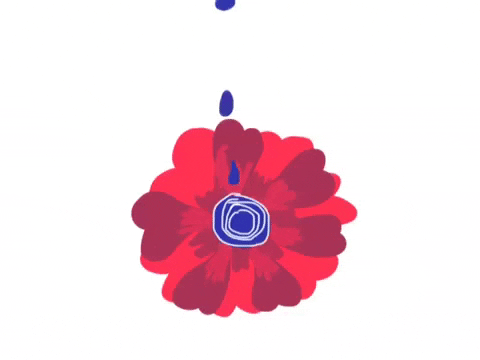

PERNIKAHAN
I PUTU AGUS MITA
&
INDAH MAHARANI
Sabtu, 9 September 2021

OM SWASTIASTU
Atas Asung Kertha Wara Nugraha Ida Sang Hyang Widhi Wasa/Thuan Yang Maha Esa, Kami bermaksud mengundang bapak/ibu/Saudara/i pada Upacara Manusa Yadnya Pawiwahan (Pernikahan) Putra dan Putri Kami.
I PUTU AGUS MITA PERNANDA
PUTRA PERTAMA DARI
I Made Bagus
&
I Nyoman Cantik
INDAH MAWARNI
PUTRI PERTAMA DARI
I Made Bagus
&
I Nyoman Cantik